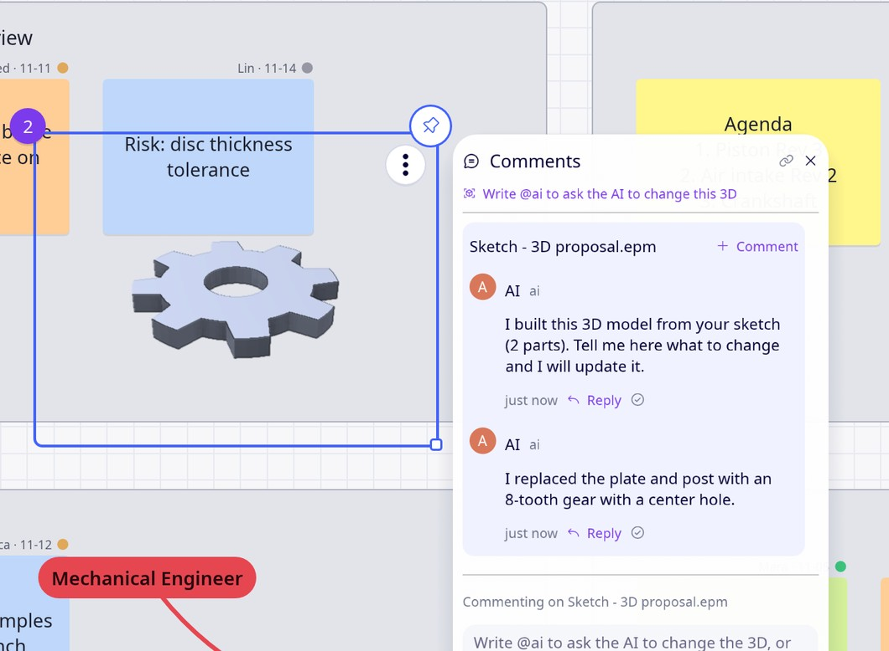

Draw an idea by hand, or start from a photo or a drawing, and get a first 3D model to discuss.

Ideas start on paper, a whiteboard or a napkin. Turning them into something the team can look at from every side means opening CAD and modelling it, so most ideas stay flat until a lot of time is already spent.
Sketch with the pen (an Apple Pencil on iPad) on the canvas, or drop a photo of a sketch, or a PDF or DWG drawing next to your notes. Annotations drawn over a photo count too.
Right-click the sketch and choose “Generate 3D from sketch”. For a photo it is “Generate 3D from photo”, and for a drawing “Generate 3D proposal”. The AI reads it and builds a first model of simple parts, placed next to your sketch.
Chat with the AI to change it (“make the base thicker, add two holes”), or edit the parts yourself in millimetres. Add hinges and sliders to see how a mechanism moves. Every change is a new version, so you can go back.
This is for ideas, not for manufacturing: it gives the team something to look at and discuss in minutes. It needs an AI service connected in the settings, and the quality of the result depends on how clear the sketch is.
Use it free on your own devices, and bring your team in when you need to.